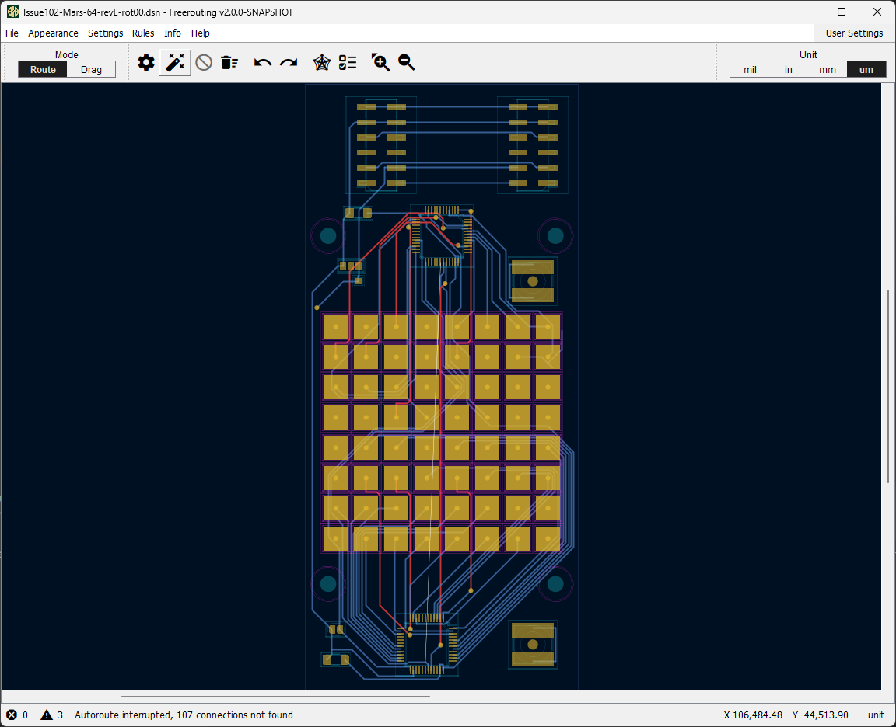

About Freerouting
Freerouting is an open-source, fully-automated PCB routing software designed for engineers, PCB designers, and hobbyists. It simplifies the complex and time-consuming process of routing printed circuit boards, making it faster and easier to create intricate and high-quality designs. Version 2.0 marks a major milestone, introducing new features, an upgraded GUI, and enhanced performance for an improved user experience.
Freerouting Interface
Key Features
- Enhanced Configuration Flexibility: Customize your workflow using JSON configuration files, environment variables, command-line arguments, or the graphical interface.
- Localization Support: Improved language support for global users, including streamlined sentence templates and placeholder control for easier translation.
- API Access (Beta): Freerouting now has a public API that integrates seamlessly with popular EDA tools like KiCad, EasyEDA, and tscircuit, expanding its usability and interoperability.
- CLI Interface: Freerouting now fully supports command-line operation, allowing you to automate and control your routing tasks without a graphical interface.
- Multi-Threaded Routing Job Scheduler: Freerouting 2.0 can handle multiple routing tasks simultaneously, significantly improving performance and efficiency.
- Multi-Platform Support: Freerouting is compatible with Windows, Linux, macOS, and offers Docker images for both ARM64 and x64 architectures.
Benefits for Users
Freerouting 2.0 offers substantial advantages for PCB designers and engineers:
- Save Time and Boost Efficiency: With its automated routing and multi-threaded scheduling, Freerouting enables faster board design, saving valuable time.
- High Degree of Customization: Freerouting adapts to your preferred workflow, with flexible configuration options available through multiple methods.
- Integrate into Existing Toolchains: The public API allows easy integration into various EDA environments, offering a more seamless workflow.
- Improved Localization: Freerouting’s enhanced localization tools allow users to work in their preferred language without awkward phrasing or misaligned templates.
- Cross-Platform Accessibility: Use Freerouting on Windows, Linux, and macOS, ensuring compatibility across popular operating systems.